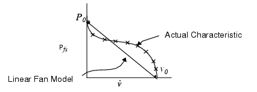
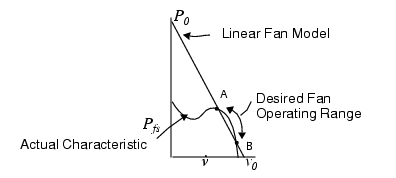
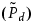
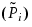
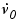

Linear Fan Flow
When defining a linear fan characteristic, set the Open Volume Flow Rate and Pressure at Stagnation so that the resultant linear representation best describes the fan curve at the point where it is expected to operate, these values may be different from those supplied by the manufacturer.
Linear Relationship Between Volume Flow Rate and Fan Static Pressure
A Linear fan relates the volume flow linearly to the fan static pressure as shown in Figure 2.
The intercepts of this straight line with the axis are denoted P0 and v0, which respectively signify the fan static pressure that causes zero flow through the fan, and the volume flow rate through the fan when the fan static pressure is zero (which pertains for a totally free standing fan, that is, not enclosed in any way).
Making a Best Fit
There are two ways of making a best fit of a linear characteristic to the actual characteristic.
The first method is to set P0 and v0 to those of the actual characteristic which gives a fit of the type shown in Figure 3.
Figure 3. Best Linear Fit Method 1The second method is to fit the line to cover the range over which you want the fan to operate as shown in Figure 4.
Figure 4. Best Linear Fit Method 2
If using the second method, the linear fan representation gives a good fit to the fan characteristic in the normal operating range but a poor fit elsewhere.
Equation of Linear Fan Characteristic
The equation of the linear fan characteristic is given by the following formula:
You set v0 and P0 as outlined in “Making a Best Fit”. The fan static pressure (Pfs) is defined as the (area averaged) static pressure on the discharge side of the fan minus the (area averaged) stagnation pressure  on the intake side of the fan, that is:
Computed Operating Point
The program determines the
operating point on the fan characteristic line specified. The accuracy
of the computed fan flow rate is determined by the accuracy with
which the program calculates the pressure head losses in the system.
Therefore, for good results an accurate representation of the losses
has to be present which will be achieved by a combination of judicious
refinements of the grid and by correct settings of any loss factors
for grilles, baffles, cabling, and so on. The computed operating
point for each fan is given in the Tables application window, that
is, it gives  and Pfs for
each fan and also flags out-of-range operation.
and Pfs for
each fan and also flags out-of-range operation.
Out-of-Range Operation
Out-of-Range operation occurs when the program
finds that either the
fan static pressure is less than zero in which case the flow rate
through the fan exceeds  or the
fan static pressure is greater than P0 in
which case flow is forced back through the fan in the wrong direction.
or the
fan static pressure is greater than P0 in
which case flow is forced back through the fan in the wrong direction.
Figure 5 is an example of where the mass flow rate can exceed .
In this enclosure, a large fan is used at the top of the enclosure and a small fan (for safety in case the large one fails) is used at the bottom. The small fan is driven well beyond its maximum flow rate v0. Of course, fan manufacturers do not provide the characteristic beyond P0 and v0, but Simcenter Flotherm assumes that the linear line continues indefinitely in each direction as shown in Figure 6.